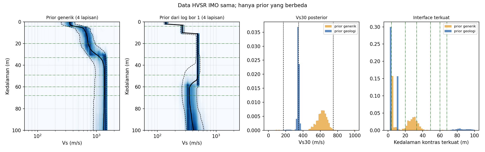

Beranda / Kuliah Umum / Ketidakpastian Inversi Vs
Pelatihan Pegawai BRIN · Mikrotremor · HVSR · SPAC
Ketidakpastian Inversi Vs dari Mikrotremor (HVSR) dan SPAC
Dari mana ketidakpastian model Vs berasal, bagaimana mengukurnya, dan bagaimana melaporkannya: contoh nyata dari stasiun seismik temporer di Bantul, prior dari log bor, dan contoh sintetik gabungan HVSR dan SPAC.
Presentasi
Jelajahi 37 slide langsung di sini (gunakan panah atau klik), atau buka layar penuh.
Di dalam presentasi: ←/→ atau klik untuk navigasi, F layar penuh, P cetak PDF.
Tujuan belajar
Setelah membaca materi ini, Anda diharapkan dapat:
- membedakan sumber ketidakpastian inversi Vs (data, teori forward, parameterisasi, prior, asumsi medan gelombang, numerik) dan menandai mana yang epistemik;
- menghitung galat HVSR yang jujur: galat antar-malam, bukan sebaran antar-jendela;
- menjelaskan mengapa jumlah lapisan dan prior geologi dapat menentukan jawaban, dan memeriksa apakah posterior menempel pada batas prior;
- membaca posterior (profil Vs(z), kedalaman interface, rasio lebar posterior terhadap prior) dan menyatakan Vs30 sebagai distribusi dengan peluang kelas situs SNI 1726:2019;
- menjelaskan kapan HVSR dan SPAC saling melengkapi, dan melaporkan model Vs beserta ketidakpastiannya.
Ringkasan hasil
Delapan inversi bayesian (MCMC) pada data HVSR nyata dan data sintetik; Vs30 dalam m/s, persentil 5–95%.
| Kasus | Jenis | Vs30 | Catatan |
|---|---|---|---|
| IMO, prior dari log bor 1 | Nyata | 329–360 | Menempel batas prior; di luar rentang prior (149–300) |
| IMO, prior generik | Nyata | 514–709 | Kecocokan data sama baik dengan prior geologi |
| WON, prior bor 5 | Nyata | 423–647 | Interface terkuat pada 2–3 m |
| PAL 2006, prior bor 4 | Nyata | 391–606 | Interface terkuat sekitar 15 m |
| AI1 2004 (situs sama dengan PAL) | Nyata | 398–729 | Median 424 terhadap 448 pada PAL |
| Sintetik, HVSR saja | Sintetik | 147–266 | Kebenaran 176 |
| Sintetik, SPAC saja | Sintetik | 171–188 | |
| Sintetik, gabungan | Sintetik | 174–182 | Masih melintasi batas kelas SE/SD (175) |
- Satu data, dua prior, dua jawaban. HVSR IMO yang sama memberi Vs30 sekitar 346 atau sekitar 620 m/s, dengan kecocokan data yang sama baik. HVSR saja tidak menentukan Vs30.
- Posterior sempit belum tentu ditentukan data. Pada IMO, posterior menempel pada batas prior, sehingga lebarnya berasal dari prior.
- Hasil dapat diulang antar-kampanye. PAL (2006) dan AI1 (2004) berada di situs yang sama dan memberi median Vs30 448 dan 424 m/s.
- SPAC menyempitkan Vs30 pada kasus sintetik, tetapi posterior yang sangat sempit pun dapat melintasi batas kelas situs.


Data & batasan
Nyata. HVSR dihitung dari noise kontinu stasiun seismik temporer: jaringan gempa susulan Yogyakarta 2006 (GFZ Potsdam, kode jaringan XN) dan MERAMEX 2004 (UGM, GFZ, IFM-GEOMAR). Stasiun berjarak 0,8–3,7 km dari titik bor, bukan tepat di titik bor. Data mentah tidak dipublikasikan di sini; hanya hasil olahan.
Asumsi. Rentang Vs per litologi adalah asumsi penulis, karena log bor hanya memuat litologi (tanpa Vs atau N-SPT).
Sintetik. Dispersi SPAC pada contoh ini sintetik. “Model sebenarnya” ditetapkan dari litologi bor 1, dan noise acaknya sama dengan galat yang diasumsikan (skenario terbaik).
Catatan: contoh ini bersifat didaktik. Hasil Vs30 bergantung pada prior dan teori forward (ellipticity Rayleigh) dan belum divalidasi dengan Vs terukur. Pita HVSR yang dipakai 1,3–25 Hz karena sensor 1 Hz. Disiapkan untuk keperluan pendidikan.
Pertanyaan diskusi
- Apa prior geologi data Anda?
- Berapa galat data Anda, dan dihitung dari apa?
- Parameterisasi apa yang Anda pilih, dan mengapa?
Daftar bacaan lanjut ada di slide 36 pada presentasi.